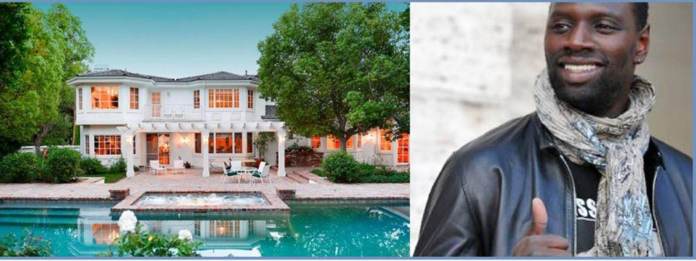
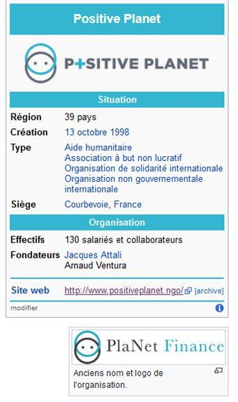

A l’occasion de son interview1 par Sud Radio, le philosophe Paul Clavier reprend les analyses issues de mon livre coécrit avec feu Jean Rémy, « Du nouvel esprit des lois et de la monnaie » publié en 2017 aux éditions Sigest, sans jamais citer cet ouvrage qui, à l’évidence, fut sinon son unique référence du moins un support important de son argumentation. Sans surprise, Paul Clavier suggère néanmoins des solutions inverses de celles qui s’imposent et qui sont effectivement développées et explicitées dans l’ouvrage ci-dessus mentionné.
En d’autres termes, le sieur Clavier reprend, dans son discours, tout ou partie des argumentations très précisément développées dans
« Du nouvel esprit des lois et de la monnaie » tout en verrouillant la possibilité de mettre en œuvre des solutions politiques et démocratiques au problème monétaire actuel.
Derrière les apparences lénifiantes d’un discours « philosophique » se présentant comme issu du bon sens et de la raison, lequel explique notamment que :
- Sans les échanges et donc sans la monnaie nous ne sommes rien ;
- « l’argent qui est gagné au moyen d’un travail productif de biens et services, et qui satisfait des besoins réels, c’est la circulation normale de la monnaie » ;
- Que la monnaie ne doit pas être considérée comme une réserve de valeur (fin de l’émission).
Le sieur Clavier, philosophe de son état, reprend les constats faits dans « Du nouvel esprit des lois et de la monnaie » tout en subvertissant le fond de l’analyse par deux méthodes :
- D’une part il accole à ces constats des réalités qui leur sont directement opposées ; il s’agit de mêler le vrai au faux pour corrompre la logique et empêcher les gens de faire les liens leur permettant de sortir de leurs chaînes ;
- D’autre part, il subvertit les solutions qui ressortent naturellement desdits constats.
Nous reconnaissons ici une méthodologie rhétorique très souvent utilisée par Jacques Attali lui-même.
L’une des idées phares – chère au cœur de Jacques Attali – cachées derrière le discours, mêlant le vrai au faux, du sieur Clavier est d’accréditer le fait que la monnaie n’est pas nécessairement liée à un État, une monnaie mondiale faisant dès lors parfaitement l’affaire. Un auditeur de Sud Radio insistant, en fin d’émission, sur le fait que la monnaie est une « institution », comme cela est expliqué dans « Du nouvel esprit des lois et de la monnaie », Paul Clavier ne retient de cette intervention que le fait que l’auditeur mentionne l’adossement de la monnaie à des métaux précieux pour rappeler, à juste titre, que cet adossement des monnaies à des métaux était une pure et simple « convention » et que contrairement à ce qu’affirme l’auditeur, cette convention n’a pas bénéficié à tous.
Paul Clavier retient également – encore à juste titre – de cette intervention que contrairement à ce que dit l’auditeur, la monnaie ne doit pas être considérée comme un instrument de réserve, ce qui est très abondamment expliqué dans le livre « Du nouvel esprit des lois et de la monnaie ».
Nulle mention en revanche par le philosophe du fait indéniable que la monnaie est effectivement une « institution », c’est-à-dire une organisation relevant de l’État dont la mission est le service public de la facilitation des échanges. La monnaie est en effet fondamentalement, comme Jean Rémy et moi-même l’avons parfaitement expliqué dans « Du nouvel esprit des lois et de la monnaie », un simple instrument de mesure de la valeur des richesses – biens ou services – produites par une population sur un territoire déterminé. Le philosophe reprend ainsi une partie importante de nos propres analyses pour les dénaturer en faisant consciencieusement disparaître le rôle politique éminent de l’État.
Une autre idée phare cachée qui ressort du discours de Paul Clavier consiste à ancrer dans l’esprit des auditeurs le fait que la monnaie est principalement liée à l’existence « d’un travail productif ». Or, une telle présentation des choses, très matérialiste et financiariste, est fallacieuse. En effet, si la monnaie est liée aux échanges et à la création de richesses humaines qui en résulte, elle n’est pas réellement liée à un « travail productif », qui est une conception capitalistique du phénomène monétaire. Cette conception de la monnaie fait immanquablement penser au récent brevet déposé (en cours de dépôt) par l’entreprise Microsoft qui consiste à lier indéfectiblement l’affectation monétaire, en l’occurrence le minage de cryptomonnaie, à une activité corporelle prédéterminée 3. Nous sommes ici encore projetés par le philosophe Paul Clavier dans le Nouvel Ordre Mondial au service des globalistes, c’est-à-dire des acteurs économiques dominants.
Un autre élément de confusion provient des interventions diverses, sans rapport apparent avec le sujet monétaire, que Sud Radio choisit délibérément de mêler au débat monétaire, nous avons, en vrac : les violences policières, les donneurs de leçons médiatiques… Ce mélange, artificiel et néanmoins volontaire et construit, des genres permet à Paul Clavier de répondre aux revendications d’un auditeur qui mettait sur le tapis un sujet essentiel – celui de la captation de l’entreprise par les apporteurs de capitaux – de telle sorte que sa réponse génère la création d’un biais cognitif. Précisément, la question relevait du sujet, tout à fait fondamental, de la nécessaire réforme de l’entreprise pour imposer la « participation ». Une fois encore, j’ai personnellement abondamment développé ce thème à l’occasion d’une thèse de droit, partiellement reprise par un livre « La nouvelle entreprise 4» et que j’ai développé par la suite dans de nombreux articles disponibles, notamment, sur le site du Saker Francophone 5. Le mélange des genres opéré par Sud Radio permet à Paul Clavier de répondre par une pirouette, enfonçant au passage les portes ouvertes en assénant que nous « sommes passés de la dictature du prolétariat à celle de l’actionnariat ». La pirouette en question, engendrant chez les auditeurs une confusion, provient, de deux choses. D’une part, après s’être interrogé sur les moyens dont disposent le régulateur financier pour répondre aux besoins « sociaux » ou « sociétaux », le sieur Clavier rappelle que le parlement dispose de l’initiative des lois à qu’à ce titre il peut, à l’occasion du vote de la loi validant le budget de l’État, déposer des propositions de lois consistant à affecter le transfert d’une partie des unités de compte des assurances vie vers de véritables investissements qui ne sont pas au seul service de l’actionnariat. Les arguments parlementaires développés par le sieur Clavier sont fallacieux à plus d’un titre. Premièrement, cette réponse faisant appel à des propositions de lois est évidemment très insuffisante alors qu’elle se laisse entendre comme une réponse ferme et définitive au problème de la fuite des richesses produites par les entreprises françaises. Deuxièmement, il laisse entendre que les parlementaires pourraient améliorer les choses, sans préciser que les parlementaires sont, par essence, entièrement au service des partis politiques dont ils sont issus, c’est-à-dire au service des gens qui apportent auxdits partis les capitaux nécessaires à leur existence.
D’autre part, Paul Clavier dilue cette question stratégique de l’entreprise participative en répondant à une question de pure réflexion stratégique par un appel aux émotions en prenant à partie un autre sujet, de nature purement sociétal. Il reste encore à préciser que le sujet appelé à la rescousse par le philosophe est lui-même pluriel car composé d’un savant mélange de violences policières et d’immigration. Au passage, le philosophe nous informe du fait qu’il milite à titre personnel pour une association de jésuites au service des réfugiés qui rend, selon lui, des « services extraordinaires » et fait preuve d’un grand dévouement. Dévouement et vertu personnelle sont ici appelés en renfort pour dénoncer l’iniquité des célébrités publiques du show business (Omar Sy en l’occurrence) qui donnent des leçons de morales publiques tout en étant bien protégées dans des résidences privées américaines ultra-surveillées. Notre inénarrable philosophe insistant toutefois sur le fait qu’il ne s’agit surtout pas de faire d’Omar Sy le prochain ennemi public numéro Un ; il ne faut quand même pas aller trop loin…

Omar Sy et sa luxueuse villa à Los Angeles
Pour résumer, Sud Radio, par l’intermédiaire d’André Bercoff, donne à Paul Clavier l’occasion de contourner le sujet stratégique de la réforme de l’entreprise en faisant appel aux bons sentiments de tous, mais surtout pas à la réflexion ni à la raison. Paul Clavier a ainsi tout loisir de manipuler l’opinion en remplaçant la réflexion par l’appel aux émotions. Il fait en sorte de mettre en avant l’accueil des réfugiés sur la priorité qui est en effet, comme l’avait parfaitement remarqué l’auditeur intervenant, la réforme de l’entreprise. Il dévie savamment le discours d’un statut de réflexion à un statut émotionnel. Cette méthode, très utilisée par les médias, a certes fait ses preuves, elle a pour objectif de stériliser et débiliter les débats publics ; elle a aussi, pour effet secondaire, d’irriter les gens au point où ils finissent par ne plus s’intéresser aux discours publics relayés par les médias. Du grand art manipulatoire auquel les médias dominants ne nous ont que trop habitués, Sud Radio ne faisant pas exception à la règle.
Puisque nous évoquons le sujet de la manipulation rhétorique, il semble important de préciser le cadre conceptuel général dans lequel Paul Clavier inscrit son argumentation monétaire. D’une façon systématique, cet auteur part d’un constat véritable pour accoler, fallacieusement et de façon totalement illégitime, ledit constat avec des éléments qui lui sont directement opposés. En voici quelques exemples :
Premier exemple
Le sieur Clavier énonce que la monnaie n’est pas un « bien dans le commerce » et accrédite, dans le même temps, l’idée que le micro-crédit est une solution idéale permettant la mise en œuvre de la nature véritable de la monnaie. La référence aux ONG de micro-crédit, par nature trans-étatiques, mises en valeur par le philosophe pour leur prétendue œuvre charitable est, une fois de plus, une discrète allusion à l’inutilité de l’État et à la négation de la nature politique de la monnaie.
Il s’agit également, de mettre discrètement en avant les bienfaits des actions de Jacques Attali avec son association-ONG « Groupe PlaNet Finance » 6, devenue l’ONG « Positive finance 7». Rappelons au passage que la micro-finance, dont J. Attali prétend qu’elle ne fait pas du crédit mais du coaching 8, a été le moyen inventé par les banquiers afin de mettre sous la coupe bancaire les activités humaines les plus élémentaires et insignifiantes, souvent réalisées par des femmes dans des pays très pauvres. Cette mise en coupe financière réglée de toute activité humaine sera, par hasard, en effet très utile lorsque le minage de cryptomonnaies dépendra de la réalisation d’activités corporelles déterminées 4. Aucune activité humaine ne doit échapper à l’emprise de la monnaie sous contrôle des dominants économiques. En outre, est-il besoin de rappeler que le micro-crédit, qui existe déjà, relève d’une conception matérialiste de la monnaie au service des banquiers et de leurs amis « intermédiaires financiers » fournisseurs de crédit.
Deuxième exemple
Paul Clavier prétend à la fois que l’argent est un simple « vecteur matériel », ce que nous avons précisément développé dans « Du nouvel esprit des lois et de la monnaie », tout en laissant entendre que l’origine de la monnaie est le troc. Or, précisément, les libéraux ont justement développés cette fable du troc à l’origine de la monnaie pour permettre d’assimiler aux yeux du public la monnaie avec le bien échangé et donc, pour suggérer qu’il existe un lien indéfectible entre les biens échangés et le signe monétaire ; la monnaie étant dès lors assimilé à un bien matériel dans le commerce. Si le sieur Clavier mentionne que la monnaie en tant qu’unité de compte a été créée très tôt, il évoque aussitôt la Préhistoire des « chasseurs cueilleurs », où l’écrit n’existait pas et où les hommes échangeaient prétendument entre eux des aliments. Cette mise en perspective est fallacieuse à plus d’un titre. Elle met en relation deux propositions directement opposées : la monnaie ne peut pas être à la fois issue du troc, comme les « théologistes » du système libéral l’ont élaboré, et initialement un signe comptable dématérialisé, comme l’archéologie le prouve ; il faut choisir ! Cette mise en perspective fallacieuse fait appel à une époque qui n’est pas constitutive d’une civilisation au sens où les groupements humains de l’âge Préhistorique n’étaient pas structurés en tant que tels. La référence à l’époque Préhistorique est un élément incongru dans le discours monétaire car la monnaie est justement l’un des fondements de la naissance de la structuration des groupes humains post-Préhistoriques.
Troisième exemple
Le sieur Clavier explique que la monnaie n’est pas « un bien dans le commerce » mais qu’elle est « une ressource commune », en omettant de préciser que la traduction juridique d’une « ressource commune » est la notion « d’institution chargée d’une mission de service public », qui est seule de nature à pouvoir s’opposer à un « bien dans le commerce ». La notion juridique d’institution renvoie en effet au niveau politique supérieur de l’État qui est justement chargé de modérer les appétits individuels des commerçants. L’État c’est l’existence du « groupe organisé », c’est le niveau supérieur permettant aux différents intérêts individuels de cohabiter en renonçant à une partie de leur « liberté » pour permettre la vie en commun de se déployer. Ignorer que la monnaie est une institution revient à nier délibérément le rôle fondamental de l’État, au sens politique du terme, dans le contrôle du phénomène monétaire.
Quatrième exemple, apparenté au troisième
Paul Clavier explique que l’argent est un « lien » en omettant toujours scrupuleusement de mentionner la nature politique et institutionnelle de l’émetteur de la monnaie. L’objectif, derrière cette pirouette, est de faire disparaître le rôle politique fondamental de l’État dans la gestion monétaire, laquelle est, par essence une prérogative régalienne. Cet objectif est renforcé par la référence faite par le philosophe aux différentes initiatives de monnaies locales, qui représentent l’exemple parfait de « monnaies sans État » ou plus précisément, de « monnaies contre l’État ». Il est facile de dénigrer l’État tel qu’actuellement conçu, encore faut-il avoir l’honnêteté d’expliquer, comme je suis seule à le faire, que ce qui nous est actuellement vendu sous le vocable « d’État » n’en est pas un car il a perdu ses caractéristiques principales de souveraineté et d’identité au service du groupe pour devenir une arme aux mains des puissances économiques dominantes.
Cinquième exemple
Paul Clavier mentionne comme inutile toute récrimination contre les banquiers (« il ne sert à rien de taper sur les financiers et la finance ») tout en prenant soin de discrètement culpabiliser les gens qui placent leurs économies (« c’est un formidable créneau d’espérance de dire que chacun, par son comportement témoigne que l’argent est un lien et non un bien en soi »). Le message subliminal est le suivant : il est inutile de s’attaquer aux banquiers qui ne font que suivre leur vocation, un peu comme la vocation du lion est de manger les gazelles ; il faut en revanche que les petites gens fassent leur « mea culpa » car le problème financier actuel leur est essentiellement imputable. Belle inversion accusatoire de la part du philosophe !
Derrière la forme « bonhomme » d’un discours empreint de « bons sentiments humanistes » et de « bon sens paysan », ponctuée de « hein » faisant appel à l’adhésion intime des auditeurs, se cache un philosophe maîtrisant parfaitement l’art oratoire, la rhétorique, et défendant bec et ongles les intérêts globalistes portés, en France, par des gens comme Jacques Attali. Paul Clavier, avec son discours monétaire apparemment hétéroclite et réellement très construit sur le plan de l’argumentation, s’est livré, dans cette émission de Sud Radio à une mystification consistant à mettre en avant la personnalité de Jacques Attali et, d’une façon générale, les idées et la philosophie propres aux intérêts globalistes. Il s’agit, plus précisément, de préparer les auditeurs à la future monnaie mondiale dématérialisée sous le contrôle exclusif des dominants économiques en présentant ce projet scélérat sous un jour flatteur. Cette préparation est une préparation d’ordre intellectuelle, une pure construction artificielle tendant à accréditer la conception monétaire telle qu’actuellement en vigueur tout en ayant l’air de la nier. En un mot : « Que tout change pour que rien ne change », sauf en pire, pourrions-nous ajouter.
Paul Clavier est un parfait représentant du mouvement globaliste, la question en suspens est de savoir à quel titre l’est-il ? Est-il un idéologue convaincu ou est-il stipendié, l’un n’excluant d’ailleurs pas l’autre dans ce monde dominé par « l’esprit de Cour », version légèrement édulcorée de « l’esprit de collaboration » …
En conclusion, cette émission de Sud Radio est une formidable opération d’ingénierie sociale, un modèle du genre, qui a pour objectif de projeter les auditeurs dans la confusion mentale et de préparer leur esprit à la prochaine disparition des États et à l’avènement du gouvernement mondial.
V.B.
Valérie Bugault est docteur en droit privé de l’université Panthéon-Sorbonne et avocate. Depuis 2009, elle a cessé ses activités d’avocate pour se consacrer à la diffusion auprès du public du résultat de ses nombreux travaux de recherches. Elle est aujourd’hui analyste de géopolitique (économique, juridique et monétaire) et conférencière. Ses sujets de recherche sont les institutions – nationales et internationales – la monnaie, l’entreprise, le droit et le fonctionnement de l’économie globale.
Elle est auteur de quatre livres, récemment publiés aux éditions Sigest :
– « Du nouvel esprit des lois et de la monnaie », co-écrit avec feu Jean Rémy,
publié en juin 2017
« La nouvelle entreprise », publié en juillet 2018
– « Les raisons cachées du désordre mondial », recueil d’articles, publié le 30 mars 2019
– « Demain dès l’aube… le renouveau », publié en septembre 2019
3. Cf .https://patentscope.wipo.int/search/en/detail.jsf?docId=WO2020060606&tab=PCTBIBLI ; pour une explication publique dudit brevet, voir le document d’Alex Simon, vice-président du programme management de la division Identité concernant l’identité numérique future : https://www.microsoft.com/en-us/microsoft-365/blog/2018/02/12/decentralized-digital-identities-and-blockchain-the-future-as-we-see-it
5. Le dernier en date est le suivant : https://lesakerfrancophone.fr/reforme-de-lentreprise-et-justice-fiscale ; également disponible sur le site de Strategika : https://strategika.fr/2020/06/09/reforme-de-lentreprise-et-justice-fiscale
Partager cette page